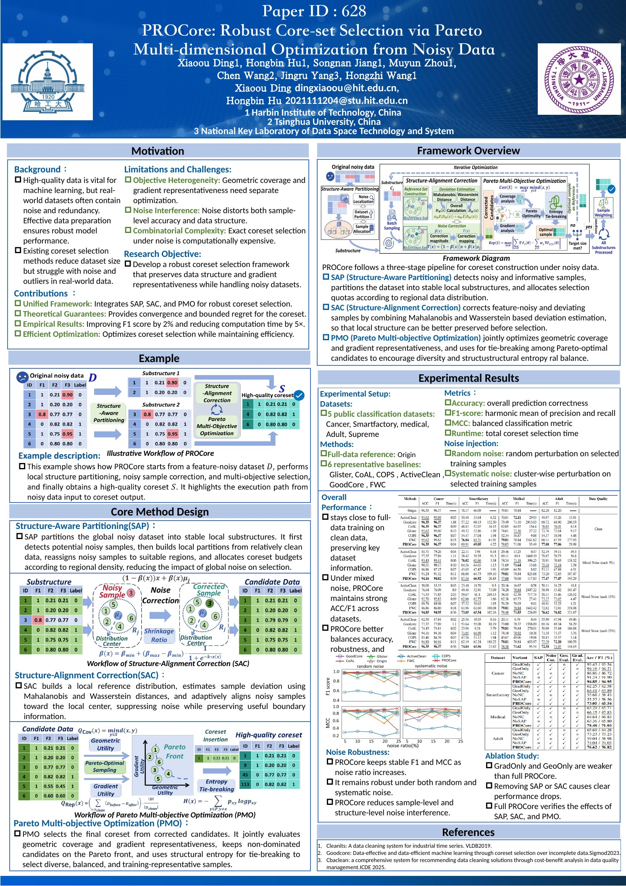
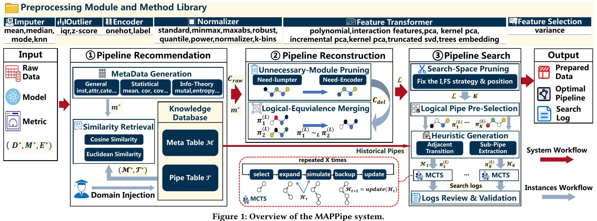
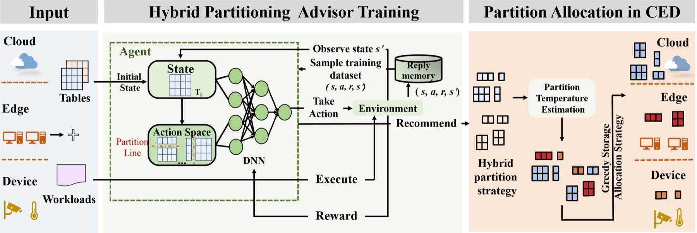
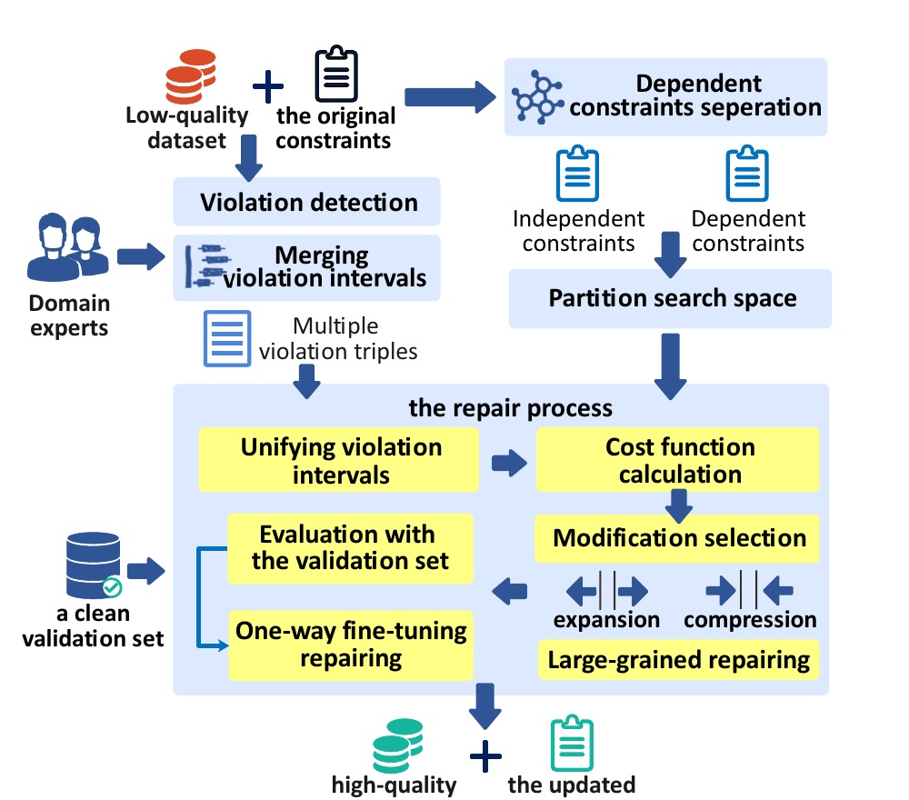
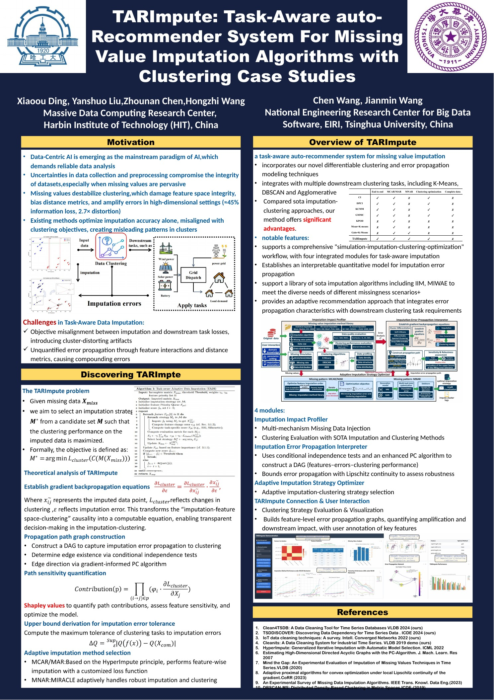
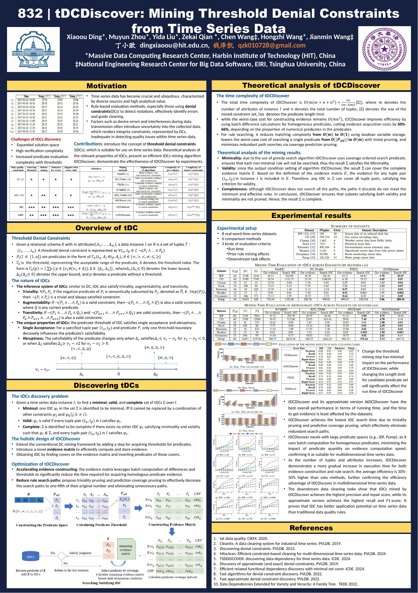

大数据治理Big Data Governance
研究数据资产价值变化、价值评估与治理活动之间的关系，以及数据流通中的管理问题。
Studies data-asset value change and estimation, their relationship with governance activities, and management issues in data circulation.
副教授 · 博士生导师 · 哈尔滨工业大学计算学部 Associate Professor · Ph.D. Supervisor · Harbin Institute of Technology
丁小欧，哈尔滨工业大学计算学部副教授、博士生导师。研究大数据治理、数据质量管理、面向机器学习的高质量数据构建，以及工业物联网时序数据治理与分析。
Xiaoou Ding is an Associate Professor and Ph.D. supervisor at the Faculty of Computing, Harbin Institute of Technology. Her research covers big data governance, data quality management, high-quality data construction for machine learning, and industrial IoT time-series data governance and analytics.
研究方向Research
相关工作覆盖数据治理、质量评估、错误检测与修复、数据清洗系统、工业时序数据管理和面向机器学习的数据准备，关注处理效果、实施成本及方法在不同任务中的适用性。
The work spans data governance, quality assessment, error detection and repair, data-cleaning systems, industrial time-series management, and data preparation for machine learning, with attention to effectiveness, cost, and applicability across tasks.
研究数据资产价值变化、价值评估与治理活动之间的关系，以及数据流通中的管理问题。
Studies data-asset value change and estimation, their relationship with governance activities, and management issues in data circulation.
关注数据质量评估、错误检测与修复、清洗方案推荐，以及多类型错误的统一处理流程。
Focuses on quality assessment, error detection and repair, cleaning-solution recommendation, and unified workflows for mixed errors.
研究数据清洗、缺失值填补、样本选择与下游模型之间的关系，并在成本约束下协同优化数据处理和模型构建。
Studies how cleaning, missing-value imputation, and sample selection interact with downstream models, including joint data-model optimization under cost constraints.
研究工业时序数据的质量规则、异常检测、依赖发现、清洗与高鲁棒查询处理。
Studies quality rules, anomaly detection, dependency discovery, cleaning, and robust query processing for industrial time series.
近期动态Recent Updates
DMCO 发表于 ICML 2026，研究数据清洗与 AutoML 的预算感知协同优化。
DMCO appears at ICML 2026 and studies budget-aware co-optimization of data cleaning and AutoML.
PROCore 发表于 ICDE 2026，MAPPipe 发表于 VLDB 2026 Demo。
PROCore appears at ICDE 2026, and MAPPipe appears at the VLDB 2026 Demo track.
主持国家自然科学基金面上项目“面向数据分析应用的工业时序数据质量评估与修复关键技术”。
Leads an NSFC General Program project on industrial time-series quality assessment and repair for data analytics.
获中国商业联合会科学技术奖技术发明一等奖（排名第三）及吴文俊人工智能科学技术奖技术发明二等奖（排名第四）。
Received a First Prize for Technological Invention from the China General Chamber of Commerce and a Second Prize for Technological Invention from the Wu Wenjun AI Science and Technology Award.
入选黑龙江省青年科技人才托举工程，主持“工业大数据治理与智能分析”项目。
Selected for the Heilongjiang Young Science and Technology Talent Program, leading a project on industrial big data governance and intelligent analytics.
工作与教育经历Experience & Education
副教授、博士生导师Associate Professor and Ph.D. Supervisor
哈尔滨工业大学计算学部Faculty of Computing, Harbin Institute of Technology
硕士生导师Master's Supervisor
哈尔滨工业大学计算学部Faculty of Computing, Harbin Institute of Technology
助理教授Assistant Professor
哈尔滨工业大学计算学部；曾任海量数据计算研究中心党支部副书记Faculty of Computing, HIT; also served as deputy secretary of the party branch at the Massive Data Computing Research Center
计算机软件与理论专业博士Ph.D. in Computer Software and Theory
哈尔滨工业大学计算机学院，导师：王宏志教授School of Computer Science and Technology, HIT; advisor: Prof. Hongzhi Wang
信息安全专业本科Undergraduate studies in Information Security
哈尔滨工业大学计算机学院School of Computer Science and Technology, HIT
科研项目Research Projects
负责相关子课题研究工作。
Leads the related project subtask.
面向数据分析应用的工业时序数据质量评估与修复关键技术，项目负责人。
Key techniques for industrial time-series quality assessment and repair in data-analytics applications; Principal Investigator.
时序数据错误检测与修复关键技术研究，项目负责人。
Key techniques for error detection and repair in time-series data; Principal Investigator.
负责工业时序低质量数据高鲁棒查询处理子课题任务。
Led a subtask on robust query processing over low-quality industrial time-series data.
黑龙江省青年科技人才托举工程项目，项目负责人。
Provincial young-talent project on industrial big data governance and intelligent analytics; Principal Investigator.
黑龙江省自然科学基金优秀青年项目，研究面向数据智能的质量评估与提升关键技术。
Excellent Young Scientists project on key techniques for data-intelligence-oriented quality assessment and improvement.
嵌入式数据库管理系统理论与关键技术研究，项目负责人。
Research on theories and key techniques for embedded database-management systems; Principal Investigator.
参与国家自然科学基金重点项目“面向云边端协同的新型数据管理理论与方法研究”。
Participates in an NSFC Key Program on new data-management theories and methods for cloud-edge-device collaboration.
主持中国博士后科学基金面上资助和黑龙江省博士后面上基金项目。
Received and led General Program support from the China Postdoctoral Science Foundation and Heilongjiang Postdoctoral Fund.
代表论文Selected Publications
论文概览Publication overview
已在 IEEE TKDE、VLDB、ICDE、CIKM 等国际期刊和会议发表论文 30 余篇，在《软件学报》《大数据》等中文期刊发表论文 10 余篇。下方列出 2025–2026 年的部分代表性工作，完整发表记录见 DBLP。
More than 30 papers have appeared in international journals and conferences including IEEE TKDE, VLDB, ICDE, and CIKM, with more than 10 additional papers in leading Chinese journals. The selection below covers recent work from 2025–2026; see DBLP for the full publication record.
 ICML 2026
ICML 2026
在统一预算约束下协同优化数据清洗与 AutoML。
Co-optimizes data cleaning and AutoML under a shared budget.

ICDE 2026从含噪数据中进行兼顾多个目标的鲁棒核心集选择。
Selects robust core sets from noisy data through Pareto multi-objective optimization.

VLDB 2026 Demo通过结构剪枝与知识增强 MCTS，在数据预处理流程的搜索效率和质量之间取得平衡。
Optimizes data preprocessing pipelines through structural pruning and knowledge-augmented MCTS.

TKDE 2026面向云边端体系结构的细粒度数据划分框架。
A fine-grained data-partitioning framework for cloud-edge-device architectures.

VLDB 2025联合修复数值序列数据中的数据错误与不准确约束。
Repairs both data errors and inaccurate constraints in numerical sequential data.
 VLDB 2025
VLDB 2025
通过统一清洗器与优化工作流处理多类型混合错误。
Handles mixed errors through unified cleaners and an optimized cleaning workflow.

PVLDB 2025面向具体任务自动推荐缺失值填补算法。
Automatically recommends missing-value imputation algorithms for downstream tasks.

ICDE 2025从时间序列中挖掘阈值拒绝约束，用于表达与发现质量问题。
Mines threshold denial constraints from time-series data for quality-rule discovery.
 ICDE 2025
ICDE 2025
融合多种质量信号以优化数据清洗工作流。
Fuses multiple quality signals to optimize data-cleaning workflows.
 ICDE 2025 Demo
ICDE 2025 Demo
以成本收益分析为依据推荐数据清洗方案。
Recommends data-cleaning solutions through cost-benefit analysis.
 BDMA 2025
BDMA 2025
综述数据治理背景下的数据资产价值变化、估计与增值方法。
Surveys data-asset value change, estimation, and appreciation under data governance.
所获奖励Awards
专著与知识产权Books & Intellectual Property
计算机科学丛书译著，机械工业出版社，第一译者。
Chinese translation in the Computer Science series, China Machine Press; lead translator.
教育部“十四五”规划教材，第二主编。
A national higher-education textbook under China's 14th Five-Year Plan; second co-editor.
普通高等教育数据科学与大数据技术系列教材，主编之一（排序 3/4）。
A higher-education textbook in the Data Science and Big Data Technology series; one of four co-editors.
简历列出 8 项中国发明专利，覆盖工业时序清洗、嵌入式数据库压缩与缓冲优化、索引推荐和云边端协同查询等方向。
Eight Chinese invention patents covering industrial time-series cleaning, embedded-database compression and buffer optimization, index recommendation, and cloud-edge query processing.
另包括多源数据真值发现初值推荐、多源数据信息抽取和 S3TD 多源数据融合分析系统。
Also includes systems for truth-discovery initialization, multi-source information extraction, and S3TD semantic multi-source data fusion.
参与《面向高端制造业领域的大数据管理系统》《数字航图：数据化转型百问》等专著编写。
Contributed to books on big-data management systems for high-end manufacturing and practical digital transformation.
学术服务Academic Service
CCF 数据库专委、数据治理发展委员会、计算机应用专委执行委员；中国通信学会开源技术专委会执行委员。
Executive committee member of the CCF Database, Data Governance, and Computer Applications committees, and the China Institute of Communications Open Source Technology committee.
VLDB 2023–2024、2024–2025 年度出版主席，VLDB 2025–2026、2026–2027 年度程序委员会委员；ICPCSEE 2026 大会联合主席；ICML 2026、AAAI 2025、ICDE 2024–2025 程序委员会委员。
VLDB publication chair for the 2023–2024 and 2024–2025 terms; VLDB PC member for 2025–2026 and 2026–2027; ICPCSEE 2026 General Co-Chair; PC member for ICML 2026, AAAI 2025, and ICDE 2024–2025.
Big Data Mining and Analytics 青年编委、《大数据》青年编委，Journal of Database Management 专刊客座编辑，并担任 TKDE、JCST 等期刊审稿人。
Young editorial board member for Big Data Mining and Analytics and Big Data; guest editor for a Journal of Database Management special issue; reviewer for IEEE TKDE, JCST, and related journals.
黑龙江省计算机学会数据科学与大数据技术专委会秘书长，CCF YOCSEF 哈尔滨学术秘书，ICPCSEE 学术委员会秘书长，并任全国计算机科学技术名词编写委员会数据库与大数据分委会编委。
Secretary-General of the Heilongjiang Computer Federation committee on Data Science and Big Data Technology, Academic Secretary of CCF YOCSEF Harbin, Secretary-General of the ICPCSEE Academic Committee, and member of the national terminology committee's Database and Big Data subcommittee.
学术报告Invited Talks
第六届军事大数据论坛：“面向复杂 AI 模型的多维度数据质量评估与质量提升技术”专家报告。
Expert talk at the 6th Military Big Data Forum on multidimensional data-quality assessment and improvement for complex AI models.
时序数据库技术大会科研论坛报告；中国大数据学术会议“数据治理与流通”论坛特邀报告。
Research-forum talk at the Time-Series Database Technology Conference and an invited talk on data governance and circulation at the China Big Data Conference.
参加 CCF 数据库专委走进高校、中山大学计算机学院系列论坛、下一代数据驱动网络国际会议等学术交流。
Talks for the CCF Database Committee university outreach program, Sun Yat-sen University forum series, and the International Conference on Next-Generation Data-Driven Networks.
在 IEEE BigData 与 APWeb-WAIM 研讨班分别报告“大数据清洗”和“工业大数据清洗”。
Tutorial talks on big data cleaning at IEEE BigData and industrial big data cleaning at APWeb-WAIM.